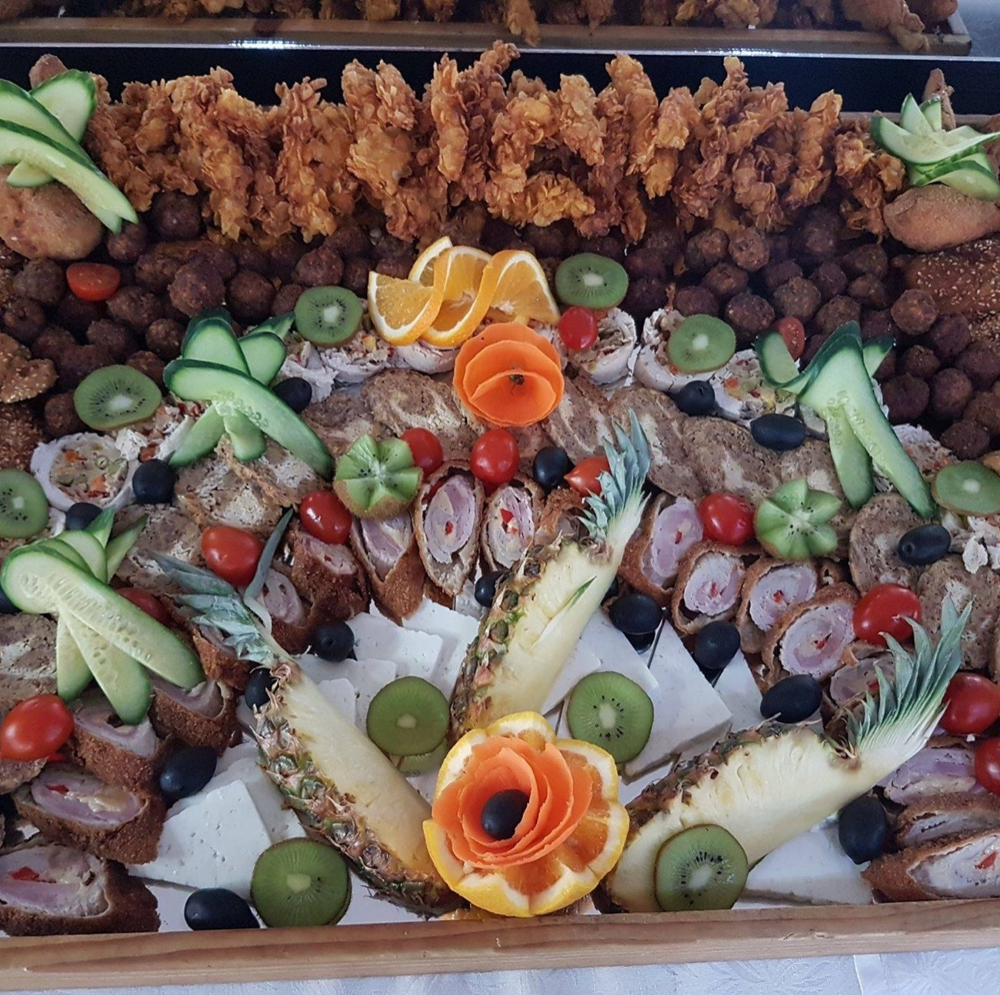
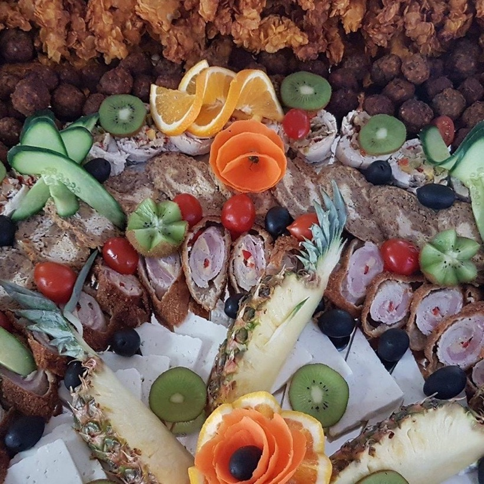
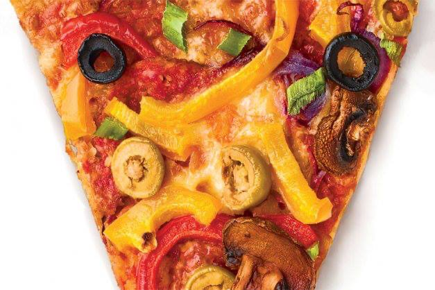

Ciorbă țărănească de pui
Ciorbă țărănească cu carne de pui, legume și verdeață proaspătă.

Meniul zilei cu supă, fel principal și salată, platouri reci pentru orice ocazie și pizza coaptă la comandă — un loc primitor, cu preparate gătite proaspăt, în Centru Nou.
Restaurant Delicatese este un local primitor din Centru Nou, Satu Mare, cu un meniu bogat, promptitudine și calitate înaltă a preparatelor. Gătim ca acasă: ciorbe și supe adevărate, fripturi la tavă și garnituri pe placul tuturor.
În fiecare zi pregătim un meniu al zilei — o supă caldă, un fel principal consistent și o salată — potrivit pentru pauza de prânz, la fața locului sau la pachet. Preluăm comenzi la telefon și te așteptăm cu drag.
Pentru zilele speciale aranjăm platouri reci generoase, pline de aperitive și garnituri, gata să facă masa mai frumoasă la orice petrecere.

Trei motive pentru care sătmărenii revin la noi zi de zi.
Supă caldă, fel principal consistent și salată — gătite proaspăt în fiecare zi, la un preț corect. Ideal pentru prânzul de peste săptămână.
Ciorbe adevărate, fripturi la tavă și garnituri clasice — rețete transilvănene, gătite ca acasă, cu ingrediente proaspete.
Platouri reci festive pentru petreceri și comenzi la pachet, ambalate cu grijă. Suni, comanzi, ridici — simplu.
Meniul se schimbă în fiecare zi. Mai jos, câteva dintre combinațiile pe care le pregătim des — supă, fel principal și salată, într-o singură porție.
Meniul zilei se anunță zilnic. Sună dimineața ca să afli felul din ziua respectivă și să comanzi la fața locului sau la pachet.
Află meniul de azi
Pe lângă bucătăria de casă, la Delicatese pregătim și pizza cu blat subțire, cu topping-uri generoase — ardei copt, măsline, ciuperci, mozzarella și sosuri făcute la fața locului.
Trei lucruri pe care le prețuim la fiecare masă servită.
Un loc primitor, unde te simți ca acasă și ești servit cu zâmbetul pe buze.
Meniu bogat, cu preparate gătite proaspăt și un meniu al zilei diferit de la o zi la alta.
Promptitudine și calitate înaltă a preparatelor, fie că mănânci la noi sau iei la pachet.